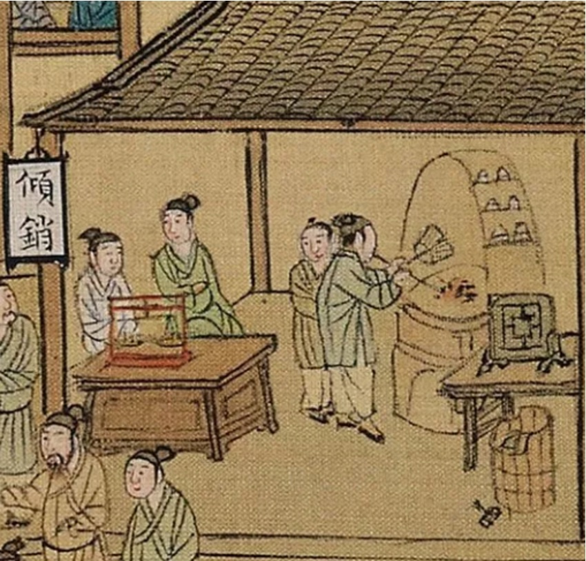

Section Three
Research Interests
Fields 領域
- Late Imperial & Early Modern Chinese History, 1400–1900 明清史
- Material Culture in China 物質文化
- Manchu and Qing Studies 滿學 · 清史
- Science, Technology, and Society in Early Modern China 科技與社會
- History of Knowledge 知識史
Current Project 現行研究
Silverstealers: Craftsmen, Technology, and State in Qing China
The thesis focuses on a series of silver counterfeiting cases conducted by official-commissioned silversmiths and vernacular counterfeiters, as well as various treasure manuals, silver handbooks, bencao books, and scholarly jottings about silver in early modern China. Tracing the relationship between knowledge, technology and the state, I investigate how a system of vernacular knowledge about silver was made, circulated, and put into practice. I argue that the materiality of silver played a crucial role in economic activities mediated by silver in early modern China. Around silver’s materiality, everyday knowledges, technical innovations, and new forms of state control emerged.

Earlier Work 前期研究
Producing Textiles for the Frontier: The Official Textile Trade between Jiangnan and Xinjiang in the Qing Era
A study of the official textile trade that carried Jiangnan silk to the Qing northwest frontier between 1757 and 1853 — the workshops that produced the cloth, the administration that moved it, and the frontier economy that received it. Presented at the Harvard East Asian Society Annual Conference and, in an earlier form, at the DKU Undergraduate Humanities Research Conference, where it received the Best Paper Award.